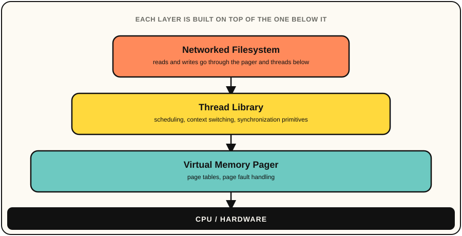
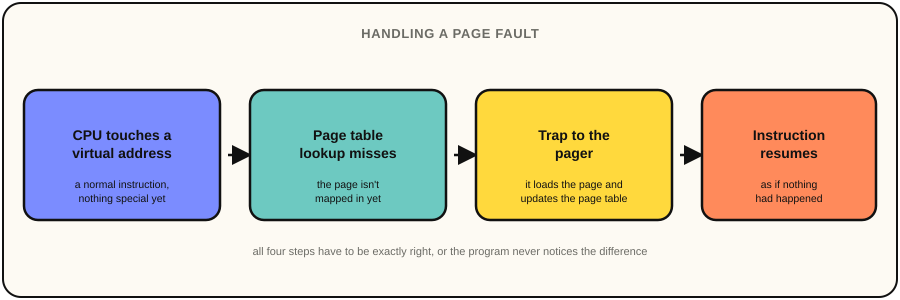

Operating System
A mock operating system in C++ with a custom thread library, virtual memory pager, and networked filesystem. I started this project in the OS class at Umich, EECS 482, and was one of my favorite classes during my time at University. Building this project taught to think deeply about the code I write, and contributed a lot to my passion and excitement for learning in programming.
No AI was used to build this project.
I mentioned in my about section that operating systems is the class that made me actually fall in love with programming, and this project is why. This project started as the standard assignment sequence for Umich's EECS 482 OS course, and after the courses ended I continued to build on top of the project. My main goals were to build a thread library, a virtual memory pager sitting underneath it, and a networked filesystem built on top of both.
The project has three layers built on top of each other, and each layer depends on the correctness of the one below it, which was very much the point of building them in that order.

The thread library is a user-level implementation, so it owns its own scheduling, context switching, and synchronization primitives instead of relying on anything the underlying OS provides. Each thread gets its own saved execution context, and the library is responsible for switching between them, running its own scheduler, and providing mutexes and condition variables for threads to coordinate safely.
I went into this layer assuming the interesting problem would be picking a scheduling policy. It turned out the part that actually demanded care was context switching and synchronization. I had to get a thread's saved state exactly right so it resumes as if nothing happened, and make sure two threads touching shared state can't interleave in a way that corrupts it. Those are the bugs that don't show up every run, and they taught me to be a lot more paranoid about concurrent code than any lecture did.
The pager sits underneath the thread library and manages page tables and page faults directly. When a running thread touches a virtual address that isn't mapped in yet, the pager traps in, loads the right page, and updates the page table so the faulting instruction can resume as if nothing had happened.

Implementing this layer, managing page tables and handling page faults, is where virtual memory stopped being a diagram in a textbook. It became something I had to get exactly right or watch the whole system behave incorrectly in confusing ways. There's a particular kind of understanding that only comes from debugging a page fault handler that isn't doing what you expect.
The networked filesystem sits on top of both layers below it, exposing file operations to client processes over the network instead of a local disk. It's built entirely on the thread library and pager underneath it, so every request the filesystem serves ultimately depends on both of them behaving correctly.
By the time I got to this layer, I already had a thread library and a memory system to build on, which meant I got to feel directly how much a higher layer depends on the correctness of the layers underneath it. A subtle bug in the pager doesn't stay contained to the pager. It shows up as a weird, hard to explain failure two layers up. That's the lesson from this project I've carried into everything since. Get the foundation right, because you will pay for it later if you don't.